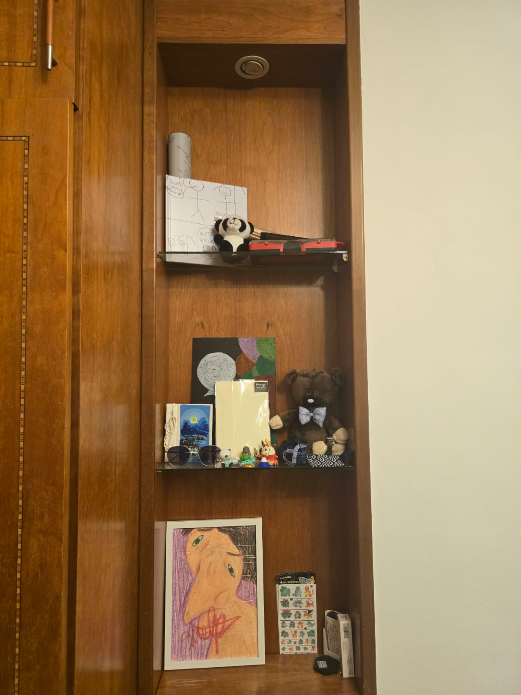

My Bedside Closet
Ok, this is a bit of a weird blog. But I was observing my bedside closet and I saw quite a bit of stuff there:

I wanted to make a blog because honestly, I know that I will forget what each thing represents.
I think that at this point, I am quite "Well traveled". And this closet represent it quite well.
In the lower shelf, I have a drawing, it was made by one of the "Temps" here in my work. I quite like this drawing. Next to it you have some pokemon stickers that I bought when I was first in Japan.
In the following shelf, I have quite a bit of stuff. The small book with the drawing on it is from a random market in Laos, funny, I bought it to write stuff in it. I didn't. The pokemon figurines are from Japan as well. The small pouch with the waves on it is from Laos as well, and it has bank notes from all the countries I've been to. The bear and the note are from a lovely girl I met in Taiwan, she gave me that as a parting gift. She was super sweet. The drawing is from that same temp mentioned before, and the sunglasses are actually from Israel! I used to wear them when I was a soldier.
The final shelf, has a book that one of my best friends gave me when he left Singapore. It's basically a photo album of our time together in Singapore. One of my favorites. Behind it I have a map that I can scratch off the countries that I've been to, I got this from another temp who worked in my company. As for the Panda, I have no idea where I got it from! I suspect that it's from a local friend I have here, but I seriously can't remember. Then I have a tool box, it's basically a screw box with a bunch of heads for the screw driver, my dad gifted this to me when I was 14. One of the most useful things I own. And finally "cooking chopsticks" that I bought in Japan, that I of course never opened.
I know, it's quite a weird post. But I felt like writing about this. And I'm glad I did! After all, if I forgot where the Panda doll is from, I'll forget where the rest are from sooner or later!